Практичний досвід · журнал «ДентАрт» 2022 №4
Новий погляд на постендореставрацію
New look for postendorestoration
У статті, надрукованій у № 2 журналу «ДентАрт» за 2016 рік, ми вже розглядали можливості відновлення девітальних зубів безштифтовими техніками та встановили, коли саме установка штифтів не тільки протипоказана, але й не має сенсу. Тут наведено оновлені клінічні приклади безштифтового відновлення ендолікованих бічних і передніх зубів.
Віддалені результати відновлення коронкової частини ендодонтично лікованих зубів визначає комплексна взаємодія низки факторів, що забезпечують довготривалу стабільність реставрації та відновленого зуба:
- якісне ендодонтичне лікування та обтураційний матеріал кореневої пломби;
- максимальне збереження об'єму твердих тканин, особливо у цервікальній ділянці, а також об'єму кістки навколо зуба та збереженість над'ясенного об'єму дентину, що комплексно забезпечує ферул-ефект;
- тривала і надійна фіксація/адгезія постендореставрації до тканин зуба, забезпечення повної герметичності системи кореневих каналів;
- заплановане навантаження на зуб та тип оклюзії.
Зазначимо, що зуби різної групової приналежності стійкі до різних типів навантаження. Для бічної групи критичне вертикальне навантаження, для передньої групи — трансверзальне. Аналіз розподілу навантажень засвідчив, що передні зуби навантажені неаксіально, а бічні зуби нормальної функції переносять більшу частину навантажень в оклюзійно-гінгівальному напрямку. Трансверзальні навантаження мають великий потенціал порушити зв'язок між зубом і реставрацією порівняно з вертикальними.
Огляди літератури Torbjörner і Fransson дійшли висновку, що коректний оклюзійний дизайн важливіший для виживання структурно скомпрометованих зубів, ніж тип конструкції, оскільки небажані навантаження та оклюзійні інтерференції сильно підвищують ризик перелому зуба. Тому висновки щодо реставрації передніх зубів не повинні автоматично прийматися для бічних зубів, і навпаки. Рекомендується до відновлення зуба ретельно проаналізувати характер прикусу та функціональні/парафункціональні навантаження — саме ці параметри значною мірою впливатимуть на виживання реставрації.
Композит, армований коротким скловолокном
Сьогодні є достатньо доказів того, що девітальні зуби можуть бути ефективно відновлені навіть при значному руйнуванні. Безумовно, після лікування кореневих каналів прогноз довготривалості таких відновлень значно гірший, оскільки вже існуючі дефекти та порожнини ендодонтичного доступу значно послаблюють зуб у цілому. Як основні причини клінічної невдачі повідомлялося про 12 % вертикальних переломів коренів, 15 % переломів культі та 40 % пародонтальних проблем.
У дослідженні Роланда Франкенбергера, Джулії Вінтер, Марі-Крістін Дудек, Майкла Науманна та інших оцінювали різницю впливу на тканини зуба непрямих конструкцій та покривних реставрацій (часткові коронки або прямі реставрації). Було чітко доведено, що часткові реставрації, як прямі, так і непрямі, завжди мають більшу стабільність порівняно з непрямими жорсткими вкладками. У літературному огляді Суф'яна Гаруші, Аусами Гаргум та інших розглянуто дані щодо композитних реставрацій, армованих коротким скловолокном, як матеріалу для заміни дентину. Загальним висновком було те, що завдяки поєднанню короткого скловолокна як об'ємної основи зі звичайним композитом несуча здатність і ступінь руйнування зуба були значно покращені порівняно зі звичайною композитною реставрацією.
Відновлення переднього зуба композитом, армованим короткими скловолокнами
Пацієнтка незадоволена кольором та положенням центрального різця. Про каріозне ураження інших передніх зубів вона дізналася після об'єктивного огляду, фотопротоколювання та прицільної рентгенографії. Це клінічний приклад реставрації передніх зубів після неодноразового ортодонтичного лікування. Оптимальним матеріалом для оклюзії, яка ще тільки буде стабілізуватися, є саме композит, тому що він легко корегується в подальшому. Головним викликом стало положення та колір центрального різця.
Пацієнтка — молода мама з дитиною на грудному вигодовуванні, тому вибір конструкцій був обмежений часовими рамками. Одним із завдань стала зміна кольору зубів на світліший. Було вирішено, окрім лікування каріозних порожнин, скорегувати форму та колір максимально неінвазивною реставрацією з перекриттям усієї поверхні натуральної емалі. Відновлення зуба в прямій техніці дозволяє швидко і якісно провести реабілітацію пацієнта.
Зуб 11 раніше був лікований цинкоксидевгенольною пастою (судячи з характерного запаху) не до верхівки, тому був перелікований із застосуванням системи ProTaper NEXT (Dentsply Sirona) та запломбований системою Termafil із силером AH+. Усі ендодонтичні маніпуляції та власне відновлення зуба зроблено за одне відвідування. Зуб відреставрований у спрощеній системі пошарового нанесення (SLS) матеріалом Neo Spectra, у якій використовується ефект хамелеона універсальних відтінків CLOUD shades, що робить процес пошарового нанесення матеріалів різної прозорості надійнішим і прогнозованішим.
Девітальний зуб 11 був армований в устьовій частині everX Posterior, а потім відновлений у техніці вільного моделювання. Для імітації дентину та перекриття зміненої в кольорі пришийкової ділянки використано відтінок Neo Spectra ST Effect D1, основна емаль імітована відтінком Neo Spectra ST A1 консистенції LV, відтінок емалі Neo Spectra ST Effect E1 — по ріжучому краю. Відбудова передніх зубів починається з вітальних зубів, з краю фронтального ансамблю, почергово. Контурування та фінішну обробку виконано під рабердамом; шліфування і полірування — системою Enhance та пастами Prisma Gloss.
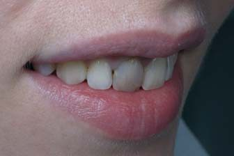
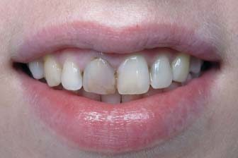
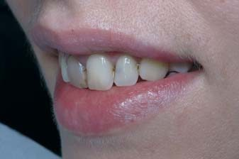
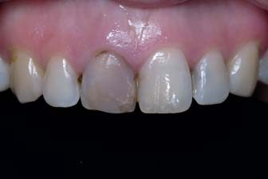
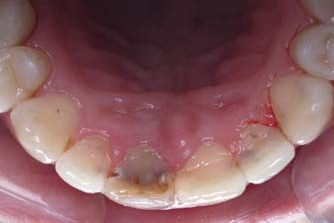
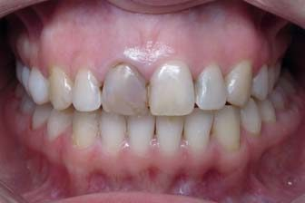
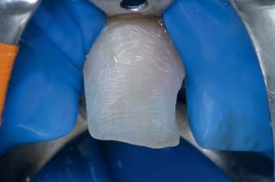
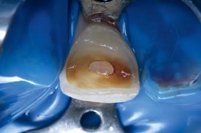
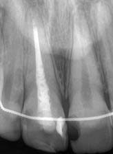
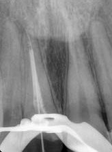
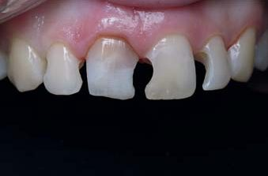
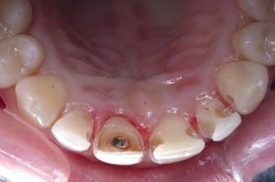
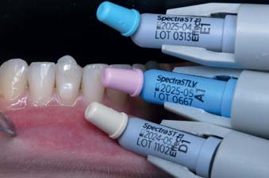
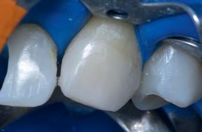
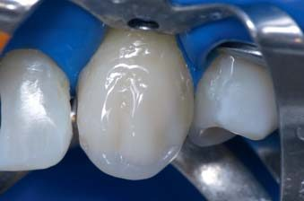
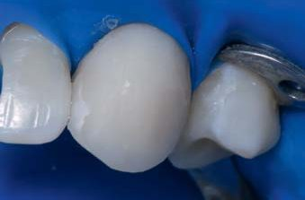
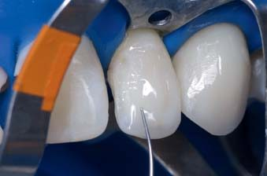
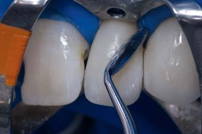
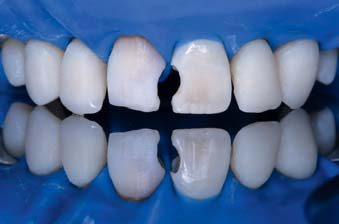
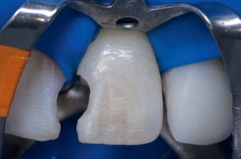
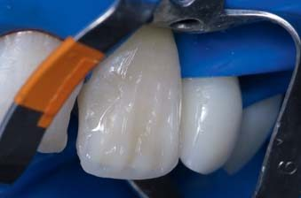
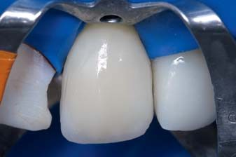
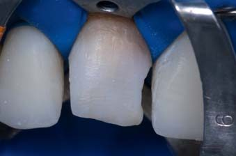
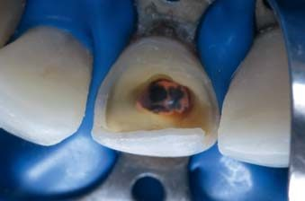
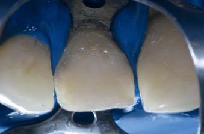
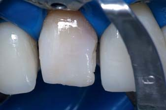
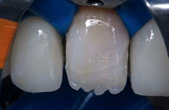
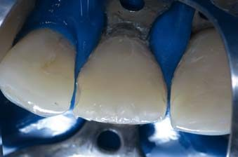
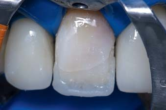
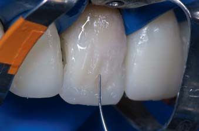
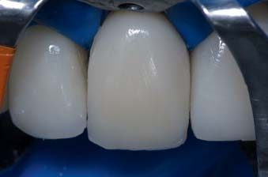
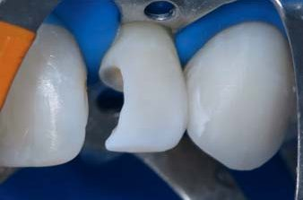
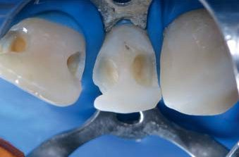
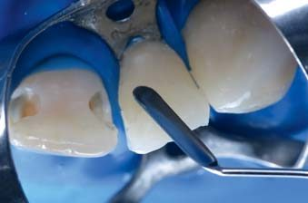
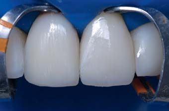
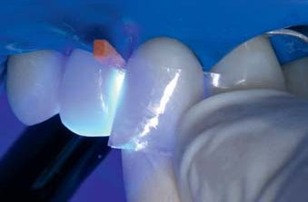
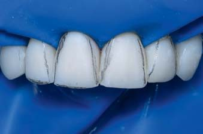
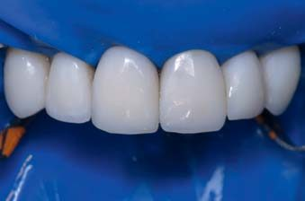
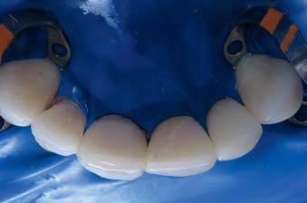
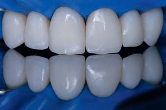
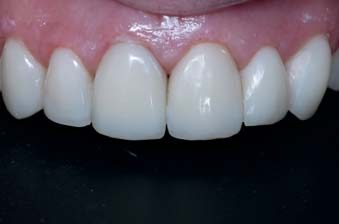
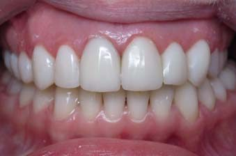
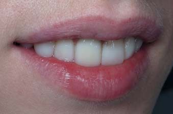
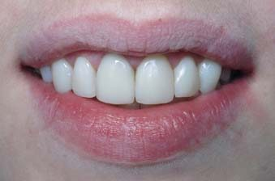
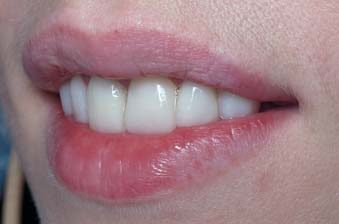
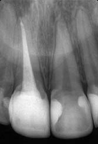
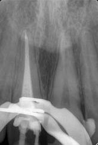
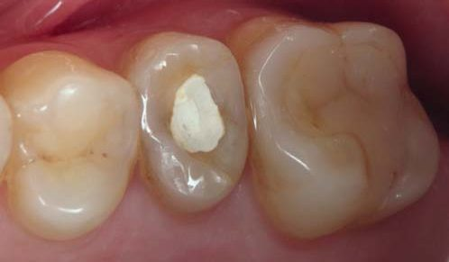
Клінічні етапи відновлення передніх зубів: підбір кольору, малоінвазивне препарування, пошарова відбудова іклів, бічних і центральних різців матеріалом Neo Spectra ST, армування шийки зуба 11 коротким скловолокном.
Відновлення бічного зуба композитом, армованим короткими скловолокнами
Зуб 25 раніше був відновлений пломбою, а після ендодонтичного лікування закритий склоіономерною пломбою. У зв'язку з періапікальними змінами проведено ендодонтичне переліковування кореневого каналу (ProTaper NEXT, обтурація Termafil із силером AH+) та відновлення зуба. При збереженні такого обсягу тканин зуб не потрібно армувати штифтами чи накривати коронкою. Головне завдання — відновити втрачену анатомію максимально наближено до натурального зуба, а також підсилити дно та стінки у пришийковій зоні й отримати додаткову ретенцію в кореневому каналі, тому по дну порожнини внесено скловолокно everX Posterior.
everX Posterior підходить як підсилювальний матеріал для прямих композитних реставрацій, особливо у великих порожнинах жувальних зубів: порожнинах, що поширюються на 3 і більше поверхні; порожнинах з відсутніми горбиками; глибоких порожнинах (класу I та II і в зубах після ендодонтичного лікування); порожнинах після заміни амальгами. Важливо, що everX Posterior завжди повинен бути покритий шаром полімеризованого універсального реставраційного композиту для отримання достатньої стійкості до зношування. Короткі скловолокна запобігають поширенню тріщин через заповнення, що вважається основною причиною руйнування композиту. Жувальна поверхня відновлена матеріалом Neo Spectra A2; дистальна проксимальна стінка відтворена за допомогою системи Palodent V3. Шліфування та полірування проведено системою Enhance, кінцеве полірування — пастами Prisma Gloss Regular (1 мкм) і Prisma Gloss Extrafine (0,3 мкм).
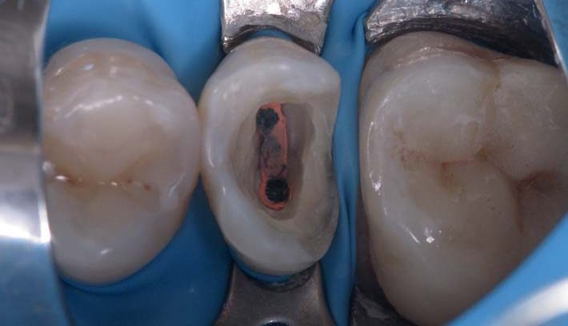
Клінічний випадок бічного зуба 25: початкова ситуація, ендодонтичне переліковування, армування дна порожнини everX Posterior, відтворення проксимальної стінки, фінішна обробка.
Висновки
З розвитком адгезивних технологій для відновлення сильно зруйнованих зубів доступний широкий спектр конструкцій. Дані літературних оглядів та тривалі клінічні спостереження переконують, що прямі відновлення композитом, армованим коротким скловолокном, є чудовою альтернативою в ситуації одиночних відновлень зубів, де неможливе використання стандартних штифтів. Такі відновлення мають достатню міцність, щоб витримувати циклічні вертикальні й горизонтальні оклюзійні навантаження. При відновленні сильно зруйнованих, структурно скомпрометованих зубів, за необхідності підсилювати стінки або дно порожнини й отримати додаткову ретенцію в корені, ми рекомендуємо використовувати композит, армований короткими скловолокнами, — у прямій реставрації або при відновленні кукси зуба під коронки чи накладки.
Література
- Лазарєва Ксенія. Екстремальні реставрації: штифтувати, не штифтувати. Частина 1 // ДентАрт. — 2015. — № 4. — С. 43–54.
- Лазарєва Ксенія. Екстремальні реставрації: штифтувати, не штифтувати. Частина 2 // ДентАрт. — 2016. — № 2. — С. 34–44.
- Кукушкин В. Л., Никулина В. Ю., Кукушкина Е. А. О постэндодонтической реставрации зубов // Эндодонтия Today. — 2011. — № 4. — С. 61–62.
- Frankenberger R., Winter J., Dudek M.-C., Naumann M., Amend S., Braun A., Krämer N., Roggendorf M. J. Post-Fatigue Fracture and Marginal Behavior of Endodontically Treated Teeth: Partial Crown vs. Full Crown vs. Endocrown vs. Fiber-Reinforced Resin Composite. Materials (Basel). 2021 Dec 15; 14(24): 7733.
- Jafarnia S., Valanezhad A., Shahabi S., Abe S., Watanabe I. Physical and mechanical characteristics of short fiber-reinforced resin composite in comparison with bulk-fill composites. J Oral Sci. 2021; 63(2): 148–151.
- Soares L. M., Razaghy M., Magne P. Optimization of large MOD restorations: Composite resin inlays vs. short fiber-reinforced direct restorations. Dent Mater. 2018 Apr; 34(4): 587–597.
- Lassila L., Keulemans F., Vallittu P. K., Garoushi S. Characterization of restorative short-fiber reinforced dental composites. Dent Mater J. 2020; 39(6): 992–999.
- Garoushi S., Gargoum A., Vallittu P. K., Lassila L. Short fiber-reinforced composite restorations: A review of the current literature. J Investig Clin Dent. 2018; 9(3): e12330.
- Dietschi D., Duc O., Krejci I., Sadan A. Biomechanical considerations for the restoration of endodontically treated teeth: a systematic review of the literature — Part 1. Quintessence Int. 2007 Oct; 38(9): 733–743.
- Ferrari M., Cagidiaco M. C., Goracci C., Vichi A., Mason P. N., Radovic I., Tay F. Long-term retrospective study of the clinical performance of fiber posts. Am J Dent. 2007; 20(5): 287–291.
- Ferrari M., Mannocci F., Vichi A., Cagidiaco M. C., Mjör I. A. Bonding to root canal: structural characteristics of the substrate. Am J Dent. 2000 Oct; 13(5): 255–260.
- Migliau G., Piccoli L., Di Carlo S., Pompa G., Beshara L. K., Dolci M. Comparison between three glass fiber post cementation techniques // Ann Stomatol (Roma). 2017 Jan-Mar; 8(1): 29–33.
- Moosavi H., Afshari S., Manari F. Fracture resistance of endodontically treated teeth with different direct corono-radicular restoration methods. J Clin Exp Dent. 2017 Mar 1; 9(3): e454–e459.
- Naumann M., Sterzenbach G., Dietrich T., Bitter K., Frankenberger R., von Stein-Lausnitz M. Dentin-like versus Rigid Endodontic Post: 11-year Randomized Controlled Pilot Trial on No-wall to 2-wall Defects. J Endod. 2017 Nov; 43(11): 1770–1775.
- Panitiwat P., Salimee P. Effect of different composite core materials on fracture resistance of endodontically treated teeth restored with FRC posts. J Appl Oral Sci. 2017 Mar-Apr; 25(2): 203–210.
- Rodrigues M. P., Soares P. B. F., Valdivia A. D. C. M., Pessoa R. S., Veríssimo C., Versluis A., Soares C. J. Patient-specific Finite Element Analysis of Fiber Post and Ferrule Design. J Endod. 2017 Sep; 43(9): 1539–1544.
- Terry D. A., Triolo P. T. Jr, Swift E. J. Jr. Fabrication of direct fiber-reinforced posts: a structural design concept. J Esthet Restor Dent. 2001; 13(4): 228–240.
- Vadavadagi S. V., Dhananjaya K. M., Yadahalli R. P., Lahari M., Shetty S. R., Bhavana B. L. Comparison of Different Post Systems for Fracture Resistance: An in vitro Study. J Contemp Dent Pract. 2017 Mar 1; 18(3): 205–208.
- Van Dijken J. W., Pallesen U. A randomized 10-year prospective follow-up of Class II nanohybrid and conventional hybrid resin composite restorations. J Adhes Dent. 2014; 16: 585–592.
- Da Rosa Rodolpho P. A., Donassollo T. A., Cenci M. S., Loguercio A. D., Moraes R. R., Bronkhorst E. M., Opdam N. J., Demarco F. F. 22-Year clinical evaluation of the performance of two posterior composites with different filler characteristics. Dent Mater. 2011; 27: 955–963.
- Dammaschke T., Nykiel K., Sagheri D., Schäfer E. Influence of coronal restorations on the fracture resistance of root canal-treated premolar and molar teeth: A retrospective study. Aust Endod J. 2013; 39: 48–56.
- Dietschi D., Duc O., Krejci I., Sadan A. Biomechanical considerations for the restoration of endodontically treated teeth: A systematic review of the literature — Part 1. Quintessence Int. 2007; 38: 733–743.
- Dietschi D., Duc O., Krejci I., Sadan A. Biomechanical considerations for the restoration of endodontically treated teeth: A systematic review of the literature, Part II. Quintessence Int. 2008; 39: 117–129.
- Eliyas S., Jalili J., Martin N. Restoration of the root canal treated tooth. Br Dent J. 2015; 218: 53–62.
- Mannocci F. Research that matters: Restoration of endodontically treated teeth. Int Endod J. 2013; 46: 389–390.
- Frankenberger R., Zeilinger I., Krech M., Mörig G., Naumann M., Braun A., Krämer N., Roggendorf M. J. Stability of endodontically treated teeth with differently invasive restorations: Adhesive vs. non-adhesive cusp stabilization. Dent Mater. 2015; 31: 1312–1320.